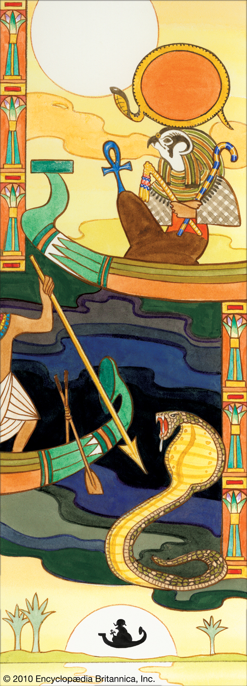

Ra - The Sun God
General Information
Ra also spelled Re or Pra

In mythology Ra is the Egyptian God of the sun, supposed
to be the "giver of life" as most people and especially people
of the era saw the sun, a giver of order, in ancient Egyptian religion,
He was believed to travel across the sky in his solar journey,
being born in the east and dying in the west, having to, to be
reborn, vanquish the "evil serpent" (Apopis).
As one of the creator gods, he rose from the ocean of chaos on the
"primeval hill", creating himself and then in turn engendering(giving rise
to the eight other gods.
Many at the time ruled claiming to be "sons of Ra", this is a trait we'd
more trough history of divine right and source of what's right and just.
Another interesting point is Ra's most commonly attributed power is that of life
or creation, including the creation of Earth, Heaven, the Underworld and all of the
gods in each of the three worlds. The Egyptians believed that Ra created the seasons,
plants, animals, and even humankind
My Theories
A lot of data, right? Now let's try to analyse the different meanings of this
and the way it was reached. One meaning is obviously the most obvious one that
most people even at the time likely found for all of this, the sun being what
makes life possible on Earth and this just being a personified version of the sun
right?
you could say so, however that's not interesting, instead we will interpret this
using a few concepts, including the idea of the ability of humans enough to create
and manifest things, the you could call it struggle inside of dealing with
distortion and troubles (the "evil serpent" thing, although there is an even
stranger interpretation we can make based on this) and so much more
Another surely interesting thing is the seasons we mentioned, phases of the sun right,
and we're talking about a God of the sun, however as we can see from what I mentioned
this God involved human elements, right? So we can draw out 2 interpretations that we
even have superposition of:
1. This represents the sun's phases influencing human life in a way based on our
circumstances that we have created for ourselves, so humans may some like summer more,
some like winter more and so on.
2. Influencing human life does not only stay in the range of the environment, but also
has influence on the human itself, however we combine these explainations this all
would explain why we see so often the 1 and 12 in religions, for example Jesus and
his 12 disciples, it could be that in whatever way they saw it this corelation
between the sun and humans never went away, it just became represented more and more
symbolically.
The End
Romanian version
Informatii generale
Ra deasemenea pronuntat Re sau Pra
In mitologie Ra este dumnezeul Egiptean al soarelui, trebuind sa
fie "dadatorul de viata" cum majoritatea oamenilor, mai ales cei
de pe vremea acea vedeau soarele, un dadator de ordine, in religia
antica Egipteana se credea ca el calatorea de-a lungul scerului in
drumul sau solar, fiind nascut in est si murind in vest, trebuins sa,
pentru a fi renascut, inviga "sarpele rau" (Apopis).
Drept unul dintre dumnezei creatori, el aparea din oceanul haosului pe
"dealul primeval", creanduse iar apoi dand nastere la cei alti opt
dumnezei.
Multi la vremea acea conduceau spunand a fi "fii lui Ra", aceste este o
caracteristica pe care o vedem mai mult prin istorie de "drept divin".
si sursa divina a ce este just si corect.
Un alt punct interesante este ca Ra avea deseori atribuita puterea vieti, sau creatiei
incluzand creatia Pamantului. raiului, lumi de dedesubt si a tuturor dumnezeilor din
cele trei lumi. Egipteni credeau deasemenea ca Ra a creat sezoanele, plantele,
animalele, si pana si umanitatea.
Teoriile mele
Multa informatie, corect? Acum sa incercam sa analizam diferitele insemnaria ale
tuturor acestor lucruri si modul la care s-a ajuns la ele. O interpretare ar fi
desigur cea mai simpla: majoritatea oamenilor la vremea acea gaseau pentru tot asta
soarele fiind cel care face viata posibila pe pamant si Ra fiind o personificare doar
a soarelui, corect?
Ai putea spune asta, dar exista ceva mai interesant posibil, deci vom folosi o
interpretare cu cateva concepte in plus: idea ca oameni pot crea si manifesta
lucruri insisi, ce ai putea numi lupta inauntru de a rezolva distortionare si
probleme (ce am numi "sarpele rau", desi exista o interpretare si mai
ciudata pe care putem sa o obtinem din asta) si mult mai mult astfel.
Un alt cu siguranta interesant lucru este situatia sezoanelor, faze "ale soarelui" da?
si discutam despre un dumnezeu al soarelui... dar din cate vedem din ce am mentionat
acest dumnezeu are elemente umane, corect? Atunci putem sa obtinem 2 interpretari
pe care apoi putem sa le avem si in superpozitie.
1. Asta reprezinta fazele soarelui influentand viata umana care cum ne influenteaza este
bazat pe circumstante pe care ni le-am creat pentry noi, deci uni oameni de exemplu
fiind in situati diferite ar vrea vara mai mult, alti iarna mai mult etc.
2. Influentarea vieti umane nu sta doar in mediul inconjurator, dar exista influenta
si pe omul insusi, oricum combinat aceste explicatii toate aceste lucruri ar explica
oricum de ce vedem atat de des 1 si 12 in religii, de exemplu Isus si cei 12
discipli ai lui, ar putea fi ca in oricare mod era vazuta aceasta corelatie intre
soare si omenire niciodata nu a disparut din atentie, doar a devenit reprezentata
mai mult si mai mult simbolic.
Sfarsit